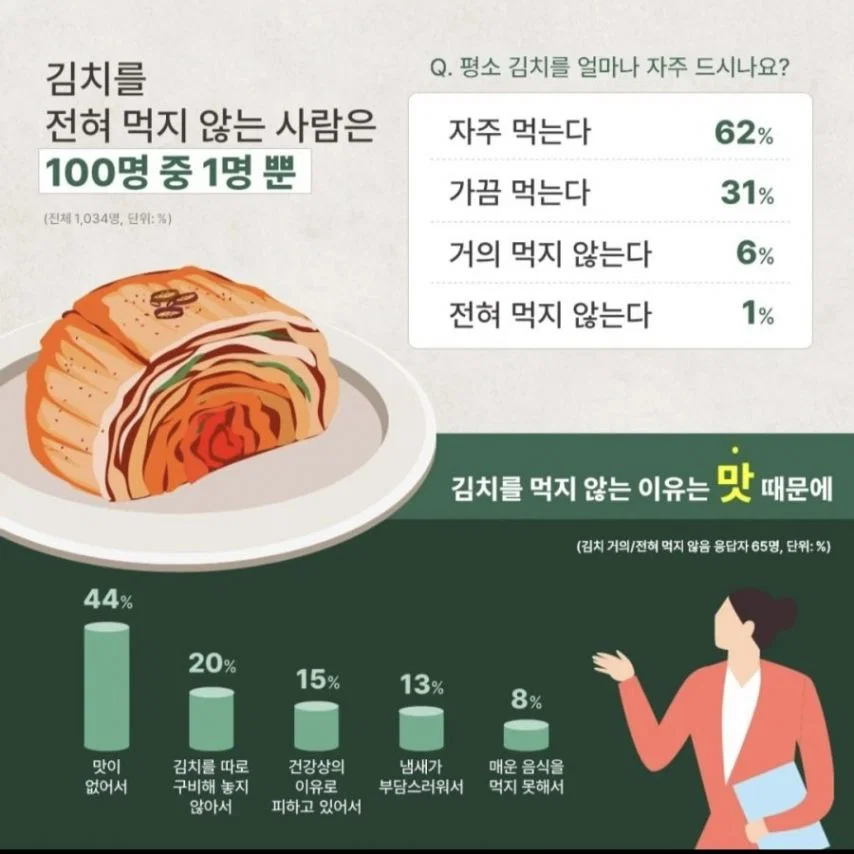

https://theqoo.net/square/4346539785

https://theqoo.net/square/4346539785

한일 혼혈인데 매운거 약해서 잘 안먹음 집에서는 엄마가 네 입맛 맞춘다고 최대한 덜 맵게 만들어줘서 좀 먹긴 함
거의 안먹음
고기랑 구어먹지 않는 한
뭔가 안먹을떈 거의 안먹는데
먹을땐 일주일동안 엄청 먹는거 같음 ㅋㅋㅋ
이런 건 김치를 먹냐 안 먹냐보다
어떤 김치를 좋아하냐로 물어봐야 의미가 있지 ㅋㅋㅋㅋㅋㅋㅋ
파김치요
애기때 먹음
초딩부터 안먹음
군대에서 먹을거없어서 먹음
나와서부터 20년가까이 안먹는중
볶음김치, 김치찜, 국밥에 깍두기는 좋아함
20년가까이 안먹는데 밑에 세개는 김치가 아님?
나도10대는아예 20대30대초반까진 잘안먹고 지금은 가끔? 먹는데 라면엔 단무지가더좋음
김치 자체를 싫어하거나 피한다기 보다 김치도 담그는 실력과 재료애 따라 맛이 천차만별이라 쓰레기 같은 김치 먹고 안먹게 된 사람들 꽤 있을걸. 안먹는다는 애들도 잘 담궈서 잘 숙성된건 존나 잘먹음. 식당도 보면 결국 김치 잘하는집=맛집임
아니씨발 인터넷으로 김치 시키면 한두포기씩은 몇일지나면 상한맛이남, 시발 김치전문으로 만드는 회사가 염장도 제대로 못함 병신들인가? 제일큰회사부터 연예인들 김치까지 꼭 상한게 있음, 그런거 먹을때마다 씨발 김치 먹지말까? 이런생각듦
귀화 외국인 아니면 없을 것 같은데?